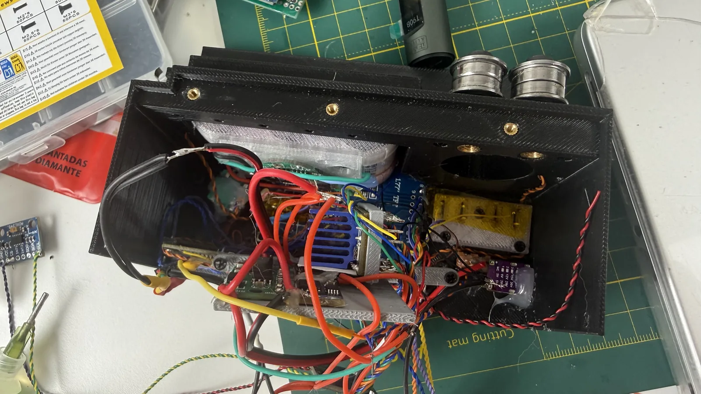
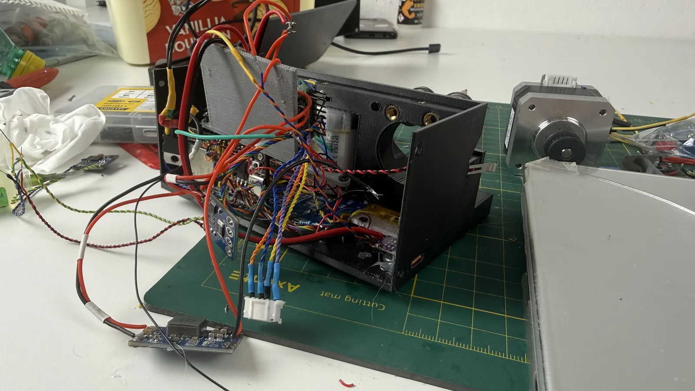

← all notes
09.08.2026#slider #electronics
Spent the last couple of days slowly working through the electronics, mostly the power side, and this evening tried putting it all together. Glad nothing caught fire, but whether it actually works is still up in the air.
First off, yesterday it turned out the old power scheme had stopped working. The MT3608 step-up converter stopped responding to voltage adjustments, and the old Power Delivery trigger stopped responding to voltage settings too. My guess is one of these died and took the other down with it. I finished off the MT3608 myself, and the PD trigger too.
Found another PD trigger in my stash. Unlike the one I had before, this one is much more compact and easier to fit into the enclosure. Unfortunately it has no fallback to plain 5V — the slider won't charge off a regular USB, it needs Power Delivery. On the other hand, PD chargers are common enough these days, and I've got a PD power bank too, so I don't think that'll be an issue.
Today, once I'd assembled almost everything, the screen suddenly stopped working. Had to take it all apart again. That's the disassembled state with the extra modules you see in the photos.
The screen turned out to be a dumb problem: a couple of pins had come loose, a solder joint had cracked. Not too surprising given how much I was shoving wires around while stuffing everything in.
The second problem today was a dead TMC2208 stepper motor driver. I accidentally damaged the old driver while desoldering, ripping a few components off the board. Went and grabbed another TMC2208 from my stash that had already been used somewhere before, but it turned out to be dead too. Either that or I actually have a mistake in the schematic. Guess I'll need to grab yet another driver and test on that one to see if it works.
All in all, there's not a whole lot left.
First off, yesterday it turned out the old power scheme had stopped working. The MT3608 step-up converter stopped responding to voltage adjustments, and the old Power Delivery trigger stopped responding to voltage settings too. My guess is one of these died and took the other down with it. I finished off the MT3608 myself, and the PD trigger too.
Found another PD trigger in my stash. Unlike the one I had before, this one is much more compact and easier to fit into the enclosure. Unfortunately it has no fallback to plain 5V — the slider won't charge off a regular USB, it needs Power Delivery. On the other hand, PD chargers are common enough these days, and I've got a PD power bank too, so I don't think that'll be an issue.
Today, once I'd assembled almost everything, the screen suddenly stopped working. Had to take it all apart again. That's the disassembled state with the extra modules you see in the photos.


The screen turned out to be a dumb problem: a couple of pins had come loose, a solder joint had cracked. Not too surprising given how much I was shoving wires around while stuffing everything in.
The second problem today was a dead TMC2208 stepper motor driver. I accidentally damaged the old driver while desoldering, ripping a few components off the board. Went and grabbed another TMC2208 from my stash that had already been used somewhere before, but it turned out to be dead too. Either that or I actually have a mistake in the schematic. Guess I'll need to grab yet another driver and test on that one to see if it works.
All in all, there's not a whole lot left.
Comments